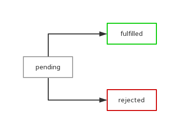

# 一、Promise基础用法
# 1.1 基本用法
new Promise(function(resolve, reject) {
//待处理的异步逻辑
//处理结束后，调用resolve或reject方法
})
- 新建一个
promise很简单，只需要new一个promise对象即可。所以promise本质上就是一个函数，它接受一个函数作为参数，并且会返回promise对象，这就给链式调用提供了基础- 其实
Promise函数的使命，就是构建出它的实例，并且负责帮我们管理这些实例。而这些实例有以下三种状态：
pending: 初始状态，位履行或拒绝fulfilled: 意味着操作成功完成rejected: 意味着操作失败
pending状态的Promise对象可能以fulfilled状态返回了一个值，也可能被某种理由（异常信息）拒绝（reject）了。当其中任一种情况出现时，Promise对象的then方法绑定的处理方法（handlers）就会被调用，then方法分别指定了resolve方法和reject方法的回调函数

var promise = new Promise(function(resolve, reject) {
if (/* 异步操作成功 */){
resolve(value);
} else {
reject(error);
}
});
promise.then(function(value) {
// 如果调用了resolve方法，执行此函数
}, function(value) {
// 如果调用了reject方法，执行此函数
});
上述代码很清晰的展示了
promise对象运行的机制。下面再看一个示例：
var getJSON = function(url) {
var promise = new Promise(function(resolve, reject){
var client = new XMLHttpRequest();
client.open("GET", url);
client.onreadystatechange = handler;
client.responseType = "json";
client.setRequestHeader("Accept", "application/json");
client.send();
function handler() {
if (this.status === 200) {
resolve(this.response);
} else {
reject(new Error(this.statusText));
}
};
});
return promise;
};
getJSON("/posts.json").then(function(json) {
console.log('Contents: ' + json);
}, function(error) {
console.error('出错了', error);
});
上面代码中，
resolve方法和reject方法调用时，都带有参数。它们的参数会被传递给回调函数。reject方法的参数通常是Error对象的实例，而resolve方法的参数除了正常的值以外，还可能是另一个Promise实例，比如像下面这样。
var p1 = new Promise(function(resolve, reject){
// ... some code
});
var p2 = new Promise(function(resolve, reject){
// ... some code
resolve(p1);
})
上面代码中，
p1和p2都是Promise的实例，但是p2的resolve方法将p1作为参数，这时p1的状态就会传递给p2。如果调用的时候，p1的状态是pending，那么p2的回调函数就会等待p1的状态改变；如果p1的状态已经是fulfilled或者rejected，那么p2的回调函数将会立刻执行
# 1.2 promise捕获错误
Promise.prototype.catch方法是Promise.prototype.then(null, rejection)的别名，用于指定发生错误时的回调函数
getJSON("/visa.json").then(function(result) {
// some code
}).catch(function(error) {
// 处理前一个回调函数运行时发生的错误
console.log('出错啦！', error);
});
Promise对象的错误具有“冒泡”性质，会一直向后传递，直到被捕获为止。也就是说，错误总是会被下一个catch语句捕获
getJSON("/visa.json").then(function(json) {
return json.name;
}).then(function(name) {
// proceed
}).catch(function(error) {
//处理前面任一个then函数抛出的错误
});
# 1.3 常用的promise方法
Promise.all方法
Promise.all方法用于将多个Promise实例，包装成一个新的Promise实例
var p = Promise.all([p1,p2,p3]);
- 上面代码中，
Promise.all方法接受一个数组作为参数，p1、p2、p3都是Promise对象的实例。（Promise.all方法的参数不一定是数组，但是必须具有iterator接口，且返回的每个成员都是Promise实例。）
p的状态由p1、p2、p3决定，分成两种情况
- 只有
p1、p2、p3的状态都变成fulfilled，p的状态才会变成fulfilled，此时p1、p2、p3的返回值组成一个数组，传递给p的回调函数 - 只要
p1、p2、p3之中有一个被rejected，p的状态就变成rejected，此时第一个被reject的实例的返回值，会传递给p的回调函数
// 生成一个Promise对象的数组
var promises = [2, 3, 5, 7, 11, 13].map(function(id){
return getJSON("/get/addr" + id + ".json");
});
Promise.all(promises).then(function(posts) {
// ...
}).catch(function(reason){
// ...
});
Promise.race方法
Promise.race方法同样是将多个Promise实例，包装成一个新的Promise实例。
var p = Promise.race([p1,p2,p3]);
上面代码中，只要
p1、p2、p3之中有一个实例率先改变状态，p的状态就跟着改变。那个率先改变的Promise实例的返回值，就传递给p的返回值
- 如果
Promise.all方法和Promise.race方法的参数，不是Promise实例，就会先调用下面讲到的Promise.resolve方法，将参数转为Promise实例，再进一步处理
Promise.resolve
有时需要将现有对象转为
Promise对象，Promise.resolve方法就起到这个作用
var jsPromise = Promise.resolve($.ajax('/whatever.json'));
上面代码将
jQuery生成deferred对象，转为一个新的ES6的Promise对象
- 如果
Promise.resolve方法的参数，不是具有then方法的对象（又称thenable对象），则返回一个新的Promise对象，且它的状态为fulfilled。
var p = Promise.resolve('Hello');
p.then(function (s){
console.log(s)
});
// Hello
- 上面代码生成一个新的
Promise对象的实例p，它的状态为fulfilled，所以回调函数会立即执行，Promise.resolve方法的参数就是回调函数的参数 - 如果
Promise.resolve方法的参数是一个Promise对象的实例，则会被原封不动地返回 Promise.reject(reason)方法也会返回一个新的Promise实例，该实例的状态为rejected。Promise.reject方法的参数reason，会被传递给实例的回调函数
var p = Promise.reject('出错啦');
p.then(null, function (error){
console.log(error)
});
// 出错了
# 1.4 Async/await简化写法
function getDataAsync (url) {
return new Promise((resolve, reject) => {
setTimeout(() => {
var res = {
url: url,
data: Math.random()
}
resolve(res)
}, 1000)
})
}
async function getData () {
var res1 = await getDataAsync('/page/1?param=123')
console.log(res1)
var res2 = await getDataAsync(`/page/2?param=${res1.data}`)
console.log(res2)
var res3 = await getDataAsync(`/page/2?param=${res2.data}`)
console.log(res3)
}
async/await是基于Promise的，因为使用async修饰的方法最终返回一个Promise， 实际上，async/await可以看做是使用Generator函数处理异步的语法糖，我们来看看如何使用Generator函数处理异步
# 1.5 Generator
首先异步函数依然是：
function getDataAsync (url) {
return new Promise((resolve, reject) => {
setTimeout(() => {
var res = {
url: url,
data: Math.random()
}
resolve(res)
}, 1000)
})
}
使用
Generator函数可以这样写
function * getData () {
var res1 = yield getDataAsync('/page/1?param=123')
console.log(res1)
var res2 = yield getDataAsync(`/page/2?param=${res1.data}`)
console.log(res2)
var res3 = yield getDataAsync(`/page/2?param=${res2.data}`)
console.log(res3))
}
然后我们这样逐步执行
var g = getData()
g.next().value.then(res1 => {
g.next(res1).value.then(res2 => {
g.next(res2).value.then(() => {
g.next()
})
})
})
上面的代码，我们逐步调用遍历器的
next()方法，由于每一个next()方法返回值的value属性为一个Promise对象，所以我们为其添加then方法， 在then方法里面接着运行next方法挪移遍历器指针，直到Generator函数运行完成，实际上，这个过程我们不必手动完成，可以封装成一个简单的执行器
function run (gen) {
var g = gen()
function next (data) {
var res = g.next(data)
if (res.done) return res.value
res.value.then((data) => {
next(data)
})
}
next()
}
run方法用来自动运行异步的Generator函数，其实就是一个递归的过程调用的过程。这样我们就不必手动执行Generator函数了。 有了run方法，我们只需要这样运行 getData 方法
run(getData)
这样，我们就可以把异步操作封装到
Generator函数内部，使用run方法作为Generator函数的自执行器，来处理异步。其实我们不难发现，async/await方法相比于Generator处理异步的方式，有很多相似的地方，只不过async/await在语义化方面更加明显，同时async/await不需要我们手写执行器，其内部已经帮我们封装好了，这就是为什么说async/await是Generator函数处理异步的语法糖了
# 二、Promise实现原理剖析
# 2.1 Promise标准
Promise规范有很多，如Promise/A，Promise/B，Promise/D以及Promise/A的升级版Promise/A+。ES6中采用了Promise/A+规范
中文版规范: Promises/A+规范(中文) (opens new window)
Promise标准解读
- 一个
promise的当前状态只能是pending、fulfilled和rejected三种之一。状态改变只能是pending到fulfilled或者pending到rejected。状态改变不可逆 promise的then方法接收两个可选参数，表示该promise状态改变时的回调(promise.then(onFulfilled, onRejected))。then方法返回一个promise。then方法可以被同一个promise调用多次
# 2.2 实现Promise
构造函数
function Promise(resolver) {}
原型方法
Promise.prototype.then = function() {}
Promise.prototype.catch = function() {}
静态方法
Promise.resolve = function() {}
Promise.reject = function() {}
Promise.all = function() {}
Promise.race = function() {}
# 2.3 极简promise雏形
function Promise(fn) {
var value = null,
callbacks = []; //callbacks为数组，因为可能同时有很多个回调
this.then = function (onFulfilled) {
callbacks.push(onFulfilled);
};
function resolve(value) {
callbacks.forEach(function (callback) {
callback(value);
});
}
fn(resolve);
}
大致的逻辑是这样的
- 调用
then方法，将想要在Promise异步操作成功时执行的回调放入callbacks队列，其实也就是注册回调函数，可以向观察者模式方向思考 - 创建
Promise实例时传入的函数会被赋予一个函数类型的参数，即resolve，它接收一个参数value，代表异步操作返回的结果，当一步操作执行成功后，用户会调用resolve方法，这时候其实真正执行的操作是将callbacks队列中的回调一一执行
//例1
function getUserId() {
return new Promise(function(resolve) {
//异步请求
http.get(url, function(results) {
resolve(results.id)
})
})
}
getUserId().then(function(id) {
//一些处理
})
// 结合例子1分析
// fn 就是getUserId函数
function Promise(fn) {
var value = null,
callbacks = []; //callbacks为数组，因为可能同时有很多个回调
// 当用户调用getUserId().then的时候开始注册传进来的回调函数
// onFulfilled就是例子中的function(id){}
// 把then的回调函数收集起来 在resolve的时候调用
this.then = function (onFulfilled) {
callbacks.push(onFulfilled);
};
// value是fn函数执行后返回的值
function resolve(value) {
// callbacks是传给then的回调函数就是例子中的function(id){}
// 遍历用户通过then传递进来的回调函数把resolve成功的结果返回给then调用即then(function(data){ console.log(data) }) 这里的data就是通过这里调用返回
callbacks.forEach(function (callback) {
callback(value);
});
}
//执行fn函数即getUserId()并且传入函数参数resolve 当fn执行完成返回的值传递给resolve函数
fn(resolve);
}
结合例1中的代码来看，首先
new Promise时，传给promise的函数发送异步请求，接着调用promise对象的then属性，注册请求成功的回调函数，然后当异步请求发送成功时，调用resolve(results.id)方法, 该方法执行then方法注册的回调数组
then方法应该能够链式调用，但是上面的最基础简单的版本显然无法支持链式调用。想让then方法支持链式调用，其实也是很简单的
this.then = function (onFulfilled) {
callbacks.push(onFulfilled);
return this;
};
只要简单一句话就可以实现类似下面的链式调用
// 例2
getUserId().then(function (id) {
// 一些处理
}).then(function (id) {
// 一些处理
});
# 2.4 加入延时机制
上述代码可能还存在一个问题：如果在
then方法注册回调之前，resolve函数就执行了，怎么办？比如promise内部的函数是同步函数
// 例3
function getUserId() {
return new Promise(function (resolve) {
resolve(9876);
});
}
getUserId().then(function (id) {
// 一些处理
});
这显然是不允许的，
Promises/A+规范明确要求回调需要通过异步方式执行，用以保证一致可靠的执行顺序。因此我们要加入一些处理，保证在resolve执行之前，then方法已经注册完所有的回调。我们可以这样改造下resolve函数:
function resolve(value) {
setTimeout(function() {
callbacks.forEach(function (callback) {
callback(value);
});
}, 0)
}
上述代码的思路也很简单，就是通过
setTimeout机制，将resolve中执行回调的逻辑放置到JS任务队列末尾，以保证在resolve执行时，then方法的回调函数已经注册完成
- 但是，这样好像还存在一个问题，可以细想一下：如果
Promise异步操作已经成功，这时，在异步操作成功之前注册的回调都会执行，但是在Promise异步操作成功这之后调用的then注册的回调就再也不会执行了，这显然不是我们想要的
# 2.5 加入状态
我们必须加入状态机制，也就是大家熟知的pending、fulfilled、rejected
Promises/A+规范中的2.1 Promise States中明确规定了，pending可以转化为fulfilled或rejected并且只能转化一次，也就是说如果pending转化到fulfilled状态，那么就不能再转化到rejected。并且fulfilled和rejected状态只能由pending转化而来，两者之间不能互相转换

//改进后的代码是这样的：
function Promise(fn) {
var state = 'pending',
value = null,
callbacks = [];
this.then = function (onFulfilled) {
if (state === 'pending') {
callbacks.push(onFulfilled);
return this;
}
onFulfilled(value);
return this;
};
function resolve(newValue) {
value = newValue;
state = 'fulfilled';
setTimeout(function () {
callbacks.forEach(function (callback) {
callback(value);
});
}, 0);
}
fn(resolve);
}
上述代码的思路是这样的：
resolve执行时，会将状态设置为fulfilled，在此之后调用then添加的新回调，都会立即执行
# 2.6 链式Promise
如果用户在
then函数里面注册的仍然是一个Promise，该如何解决？比如下面的例4
// 例4
getUserId()
.then(getUserJobById)
.then(function (job) {
// 对job的处理
});
function getUserJobById(id) {
return new Promise(function (resolve) {
http.get(baseUrl + id, function(job) {
resolve(job);
});
});
}
- 这种场景相信用过
promise的人都知道会有很多，那么类似这种就是所谓的链式Promise - 链式
Promise是指在当前promise达到fulfilled状态后，即开始进行下一个promise（后邻promise）。那么我们如何衔接当前promise和后邻promise呢？（这是这里的难点 - 只要在
then方法里面return一个promise就好啦。Promises/A+规范中的2.2.7就是这样
下面来看看这段暗藏玄机的
then方法和resolve方法改造代码
function Promise(fn) {
var state = 'pending',
value = null,
callbacks = [];
this.then = function (onFulfilled) {
return new Promise(function (resolve) {
handle({
onFulfilled: onFulfilled || null,
resolve: resolve
});
});
};
function handle(callback) {
if (state === 'pending') {
callbacks.push(callback);
return;
}
//如果then中没有传递任何东西
if(!callback.onFulfilled) {
callback.resolve(value);
return;
}
var ret = callback.onFulfilled(value);
callback.resolve(ret);
}
function resolve(newValue) {
if (newValue && (typeof newValue === 'object' || typeof newValue === 'function')) {
var then = newValue.then;
if (typeof then === 'function') {
then.call(newValue, resolve);
return;
}
}
state = 'fulfilled';
value = newValue;
setTimeout(function () {
callbacks.forEach(function (callback) {
handle(callback);
});
}, 0);
}
fn(resolve);
}
我们结合例4的代码，分析下上面的代码逻辑，为了方便阅读，我把例4的代码贴在这里
// 例4
getUserId()
.then(getUserJobById)
.then(function (job) {
// 对job的处理
});
function getUserJobById(id) {
return new Promise(function (resolve) {
http.get(baseUrl + id, function(job) {
resolve(job);
});
});
}
then方法中，创建并返回了新的Promise实例，这是串行Promise的基础，并且支持链式调用handle方法是promise内部的方法。then方法传入的形参onFulfilled以及创建新Promise实例时传入的resolve均被push到当前promise的callbacks队列中，这是衔接当前promise和后邻promise的关键所在getUserId生成的promise（简称getUserId promise）异步操作成功，执行其内部方法resolve，传入的参数正是异步操作的结果id- 调用
handle方法处理callbacks队列中的回调：getUserJobById方法，生成新的promise（getUserJobById promise） - 执行之前由
getUserId promise的then方法生成的新promise(称为bridge promise)的resolve方法，传入参数为getUserJobById promise。这种情况下，会将该resolve方法传入getUserJobById promise的then方法中，并直接返回 - 在
getUserJobById promise异步操作成功时，执行其callbacks中的回调：getUserId bridge promise中的resolve方法 - 最后执行
getUserId bridge promise的后邻promise的callbacks中的回调
# 2.7 失败处理
在异步操作失败时，标记其状态为
rejected，并执行注册的失败回调
//例5
function getUserId() {
return new Promise(function(resolve) {
//异步请求
http.get(url, function(error, results) {
if (error) {
reject(error);
}
resolve(results.id)
})
})
}
getUserId().then(function(id) {
//一些处理
}, function(error) {
console.log(error)
})
有了之前处理
fulfilled状态的经验，支持错误处理变得很容易,只需要在注册回调、处理状态变更上都要加入新的逻辑
function Promise(fn) {
var state = 'pending',
value = null,
callbacks = [];
this.then = function (onFulfilled, onRejected) {
return new Promise(function (resolve, reject) {
handle({
onFulfilled: onFulfilled || null,
onRejected: onRejected || null,
resolve: resolve,
reject: reject
});
});
};
function handle(callback) {
if (state === 'pending') {
callbacks.push(callback);
return;
}
var cb = state === 'fulfilled' ? callback.onFulfilled : callback.onRejected,
ret;
if (cb === null) {
cb = state === 'fulfilled' ? callback.resolve : callback.reject;
cb(value);
return;
}
ret = cb(value);
callback.resolve(ret);
}
function resolve(newValue) {
if (newValue && (typeof newValue === 'object' || typeof newValue === 'function')) {
var then = newValue.then;
if (typeof then === 'function') {
then.call(newValue, resolve, reject);
return;
}
}
state = 'fulfilled';
value = newValue;
execute();
}
function reject(reason) {
state = 'rejected';
value = reason;
execute();
}
function execute() {
setTimeout(function () {
callbacks.forEach(function (callback) {
handle(callback);
});
}, 0);
}
fn(resolve, reject);
}
上述代码增加了新的
reject方法，供异步操作失败时调用，同时抽出了resolve和reject共用的部分，形成execute方法
错误冒泡是上述代码已经支持，且非常实用的一个特性。在handle中发现没有指定异步操作失败的回调时，会直接将bridge promise(then函数返回的promise，后同)设为rejected状态，如此达成执行后续失败回调的效果。这有利于简化串行Promise的失败处理成本，因为一组异步操作往往会对应一个实际功能，失败处理方法通常是一致的
//例6
getUserId()
.then(getUserJobById)
.then(function (job) {
// 处理job
}, function (error) {
// getUserId或者getUerJobById时出现的错误
console.log(error);
});
# 2.8 异常处理
如果在执行成功回调、失败回调时代码出错怎么办？对于这类异常，可以使用
try-catch捕获错误，并将bridge promise设为rejected状态。handle方法改造如下
function handle(callback) {
if (state === 'pending') {
callbacks.push(callback);
return;
}
var cb = state === 'fulfilled' ? callback.onFulfilled : callback.onRejected,
ret;
if (cb === null) {
cb = state === 'fulfilled' ? callback.resolve : callback.reject;
cb(value);
return;
}
try {
ret = cb(value);
callback.resolve(ret);
} catch (e) {
callback.reject(e);
}
}
如果在异步操作中，多次执行
resolve或者reject会重复处理后续回调，可以通过内置一个标志位解决
# 2.9 完整实现
// 三种状态
const PENDING = "pending";
const RESOLVED = "resolved";
const REJECTED = "rejected";
// promise 接收一个函数参数，该函数会立即执行
function MyPromise(fn) {
let _this = this;
_this.currentState = PENDING;
_this.value = undefined;
// 用于保存 then 中的回调，只有当 promise
// 状态为 pending 时才会缓存，并且每个实例至多缓存一个
_this.resolvedCallbacks = [];
_this.rejectedCallbacks = [];
_this.resolve = function (value) {
if (value instanceof MyPromise) {
// 如果 value 是个 Promise，递归执行
return value.then(_this.resolve, _this.reject)
}
setTimeout(() => { // 异步执行，保证执行顺序
if (_this.currentState === PENDING) {
_this.currentState = RESOLVED;
_this.value = value;
_this.resolvedCallbacks.forEach(cb => cb());
}
})
};
_this.reject = function (reason) {
setTimeout(() => { // 异步执行，保证执行顺序
if (_this.currentState === PENDING) {
_this.currentState = REJECTED;
_this.value = reason;
_this.rejectedCallbacks.forEach(cb => cb());
}
})
}
// 用于解决以下问题
// new Promise(() => throw Error('error))
try {
fn(_this.resolve, _this.reject);
} catch (e) {
_this.reject(e);
}
}
MyPromise.prototype.then = function (onResolved, onRejected) {
var self = this;
// 规范 2.2.7，then 必须返回一个新的 promise
var promise2;
// 规范 2.2.onResolved 和 onRejected 都为可选参数
// 如果类型不是函数需要忽略，同时也实现了透传
// Promise.resolve(4).then().then((value) => console.log(value))
onResolved = typeof onResolved === 'function' ? onResolved : v => v;
onRejected = typeof onRejected === 'function' ? onRejected : r => throw r;
if (self.currentState === RESOLVED) {
return (promise2 = new MyPromise(function (resolve, reject) {
// 规范 2.2.4，保证 onFulfilled，onRjected 异步执行
// 所以用了 setTimeout 包裹下
setTimeout(function () {
try {
var x = onResolved(self.value);
resolutionProcedure(promise2, x, resolve, reject);
} catch (reason) {
reject(reason);
}
});
}));
}
if (self.currentState === REJECTED) {
return (promise2 = new MyPromise(function (resolve, reject) {
setTimeout(function () {
// 异步执行onRejected
try {
var x = onRejected(self.value);
resolutionProcedure(promise2, x, resolve, reject);
} catch (reason) {
reject(reason);
}
});
}));
}
if (self.currentState === PENDING) {
return (promise2 = new MyPromise(function (resolve, reject) {
self.resolvedCallbacks.push(function () {
// 考虑到可能会有报错，所以使用 try/catch 包裹
try {
var x = onResolved(self.value);
resolutionProcedure(promise2, x, resolve, reject);
} catch (r) {
reject(r);
}
});
self.rejectedCallbacks.push(function () {
try {
var x = onRejected(self.value);
resolutionProcedure(promise2, x, resolve, reject);
} catch (r) {
reject(r);
}
});
}));
}
};
// 规范 2.3
function resolutionProcedure(promise2, x, resolve, reject) {
// 规范 2.3.1，x 不能和 promise2 相同，避免循环引用
if (promise2 === x) {
return reject(new TypeError("Error"));
}
// 规范 2.3.2
// 如果 x 为 Promise，状态为 pending 需要继续等待否则执行
if (x instanceof MyPromise) {
if (x.currentState === PENDING) {
x.then(function (value) {
// 再次调用该函数是为了确认 x resolve 的
// 参数是什么类型，如果是基本类型就再次 resolve
// 把值传给下个 then
resolutionProcedure(promise2, value, resolve, reject);
}, reject);
} else {
x.then(resolve, reject);
}
return;
}
// 规范 2.3.3.3.3
// reject 或者 resolve 其中一个执行过得话，忽略其他的
let called = false;
// 规范 2.3.3，判断 x 是否为对象或者函数
if (x !== null && (typeof x === "object" || typeof x === "function")) {
// 规范 2.3.3.2，如果不能取出 then，就 reject
try {
// 规范 2.3.3.1
let then = x.then;
// 如果 then 是函数，调用 x.then
if (typeof then === "function") {
// 规范 2.3.3.3
then.call(
x,
y => {
if (called) return;
called = true;
// 规范 2.3.3.3.1
resolutionProcedure(promise2, y, resolve, reject);
},
e => {
if (called) return;
called = true;
reject(e);
}
);
} else {
// 规范 2.3.3.4
resolve(x);
}
} catch (e) {
if (called) return;
called = true;
reject(e);
}
} else {
// 规范 2.3.4，x 为基本类型
resolve(x);
}
}
# 2.10 小结
这里一定要注意的点是：promise里面的then函数仅仅是注册了后续需要执行的代码，真正的执行是在resolve方法里面执行的，理清了这层，再来分析源码会省力的多
现在回顾下
Promise的实现过程，其主要使用了设计模式中的观察者模式
- 通过
Promise.prototype.then和Promise.prototype.catch方法将观察者方法注册到被观察者Promise对象中，同时返回一个新的Promise对象，以便可以链式调用 - 被观察者管理内部
pending、fulfilled和rejected的状态转变，同时通过构造函数中传递的resolve和reject方法以主动触发状态转变和通知观察者